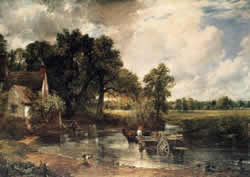
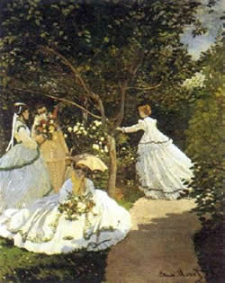
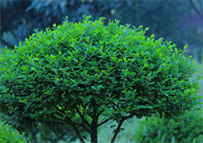

Although he showed an early talent for art and began painting his native Suffolk scenery before he left school, his great originality matured slowly.
He committed himself to a career as an artist only in 1799, when he joined the Royal Academy Schools and it was not until 1829 that he was grudgingly made a full Academician, elected by a majority of only one vote.
In 1816 he became financially secure on the death of his father and married Maria Bicknell after a seven-year courtship and in the fact of strong opposition from her family. During the 1820s he began to win recognition: The Hay Wain (National Gallery, London, 1821) won a gold medal at the Paris Salon of 1824 and Constable was admired by Delacroix and Bonington among others.
His wife died in 1828, however, and the remaining years of his life were clouded by despondency.
This text is an excerpt from The WebMuseum, Paris
His youth was spent in Le Havre, where he first excelled as a caricaturist but was then converted to landscape painting by his early mentor Boudin, from whom he derived his firm predilection for painting out of doors.
In 1859 he studied in Paris at the Atelier Suisse and formed a friendship with Pissarro. After two years' military service in Algiers, he returned to Le Havre and met Jongkind, to whom he said he owed `the definitive education of my eye'.
He then, in 1862, entered the studio of Gleyre in Paris and there met Renoir, Sisley, and Bazille, with whom he was to form the nucleus of the Impressionist group.
Monet's devotion to painting out of doors is illustrated by the famous story concerning one of his most ambitious early works, Women in the Garden (Musée d'Orsay, Paris; 1866-67). The picture is about 2.5 meters high and to enable him to paint all of it outside he had a trench dug in the garden so that the canvas could be raised or lowered by pulleys to the height he required.
Courbet visited him when he was working on it and said Monet would not paint even the leaves in the background unless the lighting conditions were exactly right.
This text is an excerpt from The WebMuseum, Paris
Gogh, Vincent (Willem) van (b. March 30, 1853, Zundert, Neth.--d. July 29, 1890, Auvers-sur-Oise, near Paris), generally considered the greatest Dutch painter and draughtsman after Rembrandt.
With Cézanne and Gauguin the greatest of Post-Impressionist artists. He powerfully influenced the current of Expressionism in modern art. His work, all of it produced during a period of only 10 years, hauntingly conveys through its striking colour, coarse brushwork, and contoured forms the anguish of a mental illness that eventually resulted in suicide. Among his masterpieces are numerous self-portraits and the well-known The Starry Night (1889).
This text is an excerpt from The WebMuseum, Paris
无论是今年9月份典型10个城市土地出让金收入还是今年11月份一线城市土地成交均价，都在不断飙升，土地盛宴貌似已不足以形容一线城市土地市场的高涨情绪。“创33个月以来新高”，“创45个月以来新高”，无论是今年9月份典型10个城市土地出让金收入还是今年11月份一线城市土地成交均价，都在不断飙升，土地盛宴貌似已不足以形容一线城市土地市场的高涨情绪，或许“饕餮盛宴”更为贴切？ 据《证券日报》记者从中国房产信息集团(CRIC)获取的一份数据显示，截至到11月底，2013年年内北京、上海、广州和深圳四大一线城市土地出让金收入总额为4720.38亿元，2012年同期则为1675.55亿元，同比暴涨181.72%，创历史最高纪录。 “今年一线城市土地市场竞争非常激烈，甚至有部分老牌房企可能也连一幅地都抢不到，开发商对未来一线、二线城市房价走势判断的乐观程度似乎一直在打破你的认知底线。”一位龙头房企的高层人士向记者如此直言，“简直疯了！”他甚至称，或许两三年后，个别企业将出现问题。
日前，我国正式宣布将中东欧16国全部列入外国人72小时免签过境口岸名单。经市外办向外交部领事司核实，这一变化政策同样适用于成都双流机场口岸。
Pablo Picasso, born in Spain, was a child prodigy who was recognized as such by his art-teacher father, who ably led him along.
The small Museo de Picasso in Barcelona is devoted primarily to his early works, which include strikingly realistic renderings of casts of ancient sculpture.
He was a rebel from the start and, as a teenager, began to frequent the Barcelona cafes where intellectuals gathered.
He soon went to Paris, the capital of art, and soaked up the works of Manet, Gustave Courbet, and Toulouse-Lautrec, whose sketchy style impressed him greatly. Then it was back to Spain, a return to France, and again back to Spain - all in the years 1899 to 1904.
....